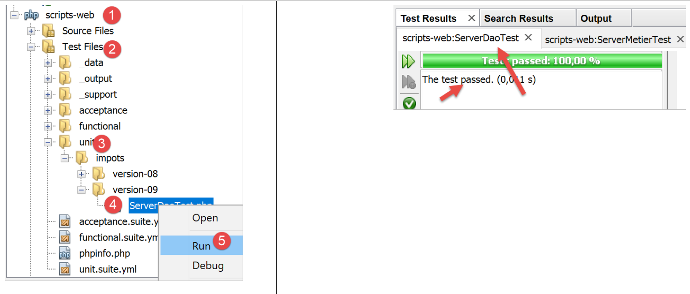
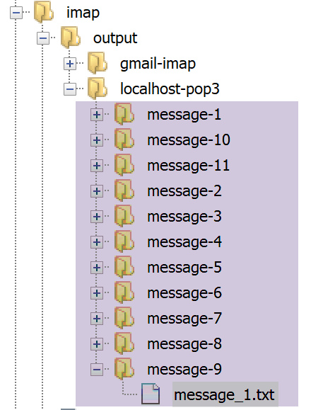

19. 应用练习 – 第9版
在此版本中，我们将对服务器进行以下改进：
- 目前，每次请求都会从数据库中检索税务管理数据。我们将使用会话：
- 在用户首次请求时，从数据库中检索税务机关数据并存储在会话中；
- 对于同一用户的后续请求，将从会话中获取税务机关数据。由于数据库查询会消耗大量资源，因此预计执行时间将略有提升；
- 服务器将把重要事件记录到文本文件中：
- 身份验证成功或失败；
- 客户端发送的参数是否有效；
- 税费计算结果；
- 各种错误情况；
- 若发生致命错误，将向应用程序管理员发送电子邮件；
客户端还必须进行修改，以处理将发送给它的会话 Cookie。
19.1. 服务器
我们目前专注于应用程序的服务器端。

该架构将通过以下脚本实现：

19.1.1. 实用工具

19.1.1.1. [Logger] 类
[Logger] 类将用于将日志写入文本文件：
<?php
namespace Application;
class Logger {
// attribute
private $resource;
// manufacturer
public function __construct(string $logsFilename) {
// open file
$this->resource = fopen($logsFilename, "a");
if (!$this->resource) {
throw new ExceptionImpots("Echec lors de la création du fichier de logs [$logsFilename]");
}
}
// writing a message to the logs
public function write(string $message) {
fputs($this->resource, (new \DateTime())->format("d/m/y H:i:s:v") . " : $message");
}
// close log file
public function close() {
fclose($this->resource);
}
}
评论
- 第 7 行：日志文件资源；
- 第 10 行：类构造函数将日志文件名作为参数接收；
- 第 12 行：文本文件以追加模式 (a+) 打开：文件将被打开，其内容将保留。新数据将写在当前内容之后；
- 第 13–15 行：如果无法打开文件，则抛出异常；
- 第 19–21 行：[write] 方法将消息 [$message] 写入日志文件，并在其前添加日期和时间；
- 第 24–16 行：[close] 方法关闭日志文件；
注意：服务器应用程序可能同时为多个客户端提供服务。然而，所有客户端共用一个日志文件。 因此，在向文件写入数据时存在并发访问的风险。必须对写入操作进行同步，以防止数据混淆。PHP为此提供了信号量 [https://www.php.net/manual/fr/book.sem.php]。本文中我们将忽略写入同步，但必须时刻注意这一问题。
19.1.1.2. [SendAdminMail] 类
[SendAdminMail] 类允许您在应用程序发生崩溃时向管理员发送电子邮件：
<?php
namespace Application;
class SendAdminMail {
// attributes
private $config;
private $logger;
// manufacturer
public function __construct(array $config, Logger $logger = NULL) {
$this->config = $config;
$this->logger = $logger;
}
public function send() {
// sends $this->config['message'] to smtp server $this->config['smtp-server'] on port $infos[smt-port]
// if $this->config['tls'] is true, TLS support will be used
// mail is sent from $this->config['from']
// for recipient $this->config['to']
// message has subject $this->config['subject']
// attachments from $this->config['attachments'] are attached to the mail
// the result of the method
try {
// message creation
$message = (new \Swift_Message())
// message subject
->setSubject($this->config["subject"])
// sender
->setFrom($this->config["from"])
// recipients with a dictionary (setTo/setCc/setBcc)
->setTo($this->config["to"])
// message text
->setBody($this->config["message"])
;
// attachments
foreach ($this->config["attachments"] as $attachment) {
// path of attachment
$fileName = __DIR__ . $attachment;
// check that the file exists
if (file_exists($fileName)) {
// attach the document to the message
$message->attach(\Swift_Attachment::fromPath($fileName));
} else {
if ($this->logger !== NULL) {
// error
$this->logger->write("L'attachement [$fileName] n'existe pas\n");
}
}
}
// protocol TLS ?
if ($this->config["tls"] === "TRUE") {
// TLS
$transport = (new \Swift_SmtpTransport($this->config["smtp-server"], $this->config["smtp-port"], 'tls'))
->setUsername($this->config["user"])
->setPassword($this->config["password"]);
} else {
// no TLS
$transport = (new \Swift_SmtpTransport($this->config["smtp-server"], $this->config["smtp-port"]));
}
// the shipment manager
$mailer = new \Swift_Mailer($transport);
// sending the message
$mailer->send($message);
// end
if ($this->logger !== NULL) {
$this->logger->write("Message [{$this->config["message"]}] envoyé à {$this->config["to"]}\n");
}
} catch (\Throwable $ex) {
// error
if ($this->logger !== NULL) {
$this->logger->write("Erreur lors de l'envoi du message [{$this->config["message"]}] à {$this->config["to"]}\n");
}
}
}
}
评论
- 第 11 行：构造函数接受两个参数：
- [$config]：一个关联数组，包含发送电子邮件所需的所有信息；
- [$logger]：用于记录电子邮件发送过程中关键时刻的日志器；
该关联数组将采用以下形式：
- 第 16–76 行：使用 [send] 方法发送电子邮件。该代码已在链接部分中展示并说明；
19.1.2. [dao] 层

[ServeurDaoWithSession.php] 脚本内容如下：
<?php
// namespace
namespace Application;
// definition of a ImpotsWithDataInDatabase class
class ServerDaoWithSession extends ServerDao {
// manufacturer
public function __construct(string $databaseFilename = NULL, TaxAdminData $taxAdminData = NULL) {
// simplest case
if ($taxAdminData !== NULL) {
$this->taxAdminData = $taxAdminData;
} else {
// hand over to parent class
parent::__construct($databaseFilename);
}
}
}
评论
- 第 7 行：09 版本中的 [ServerDaoWithSession] 类继承自 08 版本的 [ServerDao] 类。事实上，[ServerDao] 类已经掌握了数据库的使用方法。剩下的工作就是处理税务管理数据已被检索的情况：
- 第 10 行：构造函数现在接受两个参数：
- [string $databaseFilename]：若税务管理数据尚未获取，则为包含数据库连接信息的文件名；否则为 NULL；
- [TaxAdminData $taxAdminData]：若税务管理数据已获取则传入该数据，否则为 NULL；
当 Web 会话开始时，[dao] 层将使用非 NULL 的 [$databaseFilename] 对象和 NULL 的 [taxAdminData] 对象进行构建。随后将从数据库中检索税务管理数据并存储在会话中。 对于同一会话内的后续请求，[dao] 层将使用一个 NULL 的 [databaseFilename] 对象以及从会话中检索到的 [taxAdminData] 对象（该对象不为 NULL）进行构建。因此，不会发生数据库查询。
19.1.3. 服务器脚本
服务器脚本 [impots-server.php] 由以下 JSON 文件 [config-server.json] 进行配置：
{
"rootDirectory": "C:/myprograms/laragon-lite/www/php7/scripts-web/impots/version-09",
"databaseFilename": "Data/database.json",
"relativeDependencies": [
"/../version-08/Entities/BaseEntity.php",
"/../version-08/Entities/ExceptionImpots.php",
"/../version-08/Entities/TaxAdminData.php",
"/../version-08/Entities/Database.php",
"/../version-08/Dao/InterfaceServerDao.php",
"/../version-08/Dao/ServerDao.php",
"/Dao/ServerDaoWithSession.php",
"/../version-08/Métier/InterfaceServerMetier.php",
"/../version-08/Métier/ServerMetier.php",
"/Utilities/Logger.php",
"/Utilities/SendAdminMail.php"
],
"absoluteDependencies": ["C:/myprograms/laragon-lite/www/vendor/autoload.php"],
"users": [
{
"login": "admin",
"passwd": "admin"
}
],
"adminMail": {
"smtp-server": "localhost",
"smtp-port": "25",
"from": "guest@localhost",
"to": "guest@localhost",
"subject": "plantage du serveur de calcul d'impôts",
"tls": "FALSE",
"attachments": []
},
"logsFilename": "Data/logs.txt"
}
服务器脚本 [impots-server.php] 修改如下：
<?php
// strict adherence to declared types of function parameters
declare (strict_types=1);
// namespace
namespace Application;
// error handling by PHP
ini_set("display_errors", "0");
//
// configuration file path
define("CONFIG_FILENAME", "Data/config-server.json");
// we retrieve the configuration
$config = \json_decode(file_get_contents(CONFIG_FILENAME), true);
// include the necessary script dependencies
$rootDirectory = $config["rootDirectory"];
foreach ($config["relativeDependencies"] as $dependency) {
require "$rootDirectory$dependency";
}
// absolute dependencies (third-party libraries)
foreach ($config["absoluteDependencies"] as $dependency) {
require "$dependency";
}
//
// symfony dependencies
use \Symfony\Component\HttpFoundation\Response;
use \Symfony\Component\HttpFoundation\Request;
use \Symfony\Component\HttpFoundation\Session\Session;
// session
$session = new Session();
$session->start();
// prepare JSON server response
$response = new Response();
$response->headers->set("content-type", "application/json");
$response->setCharset("utf-8");
// log file creation
try {
$logger = new Logger($config['logsFilename']);
} catch (ExceptionImpots $ex) {
// internal server error
doInternalServerError($ex->getMessage(), $response, NULL, $config['adminMail']);
// completed
exit;
}
// 1st log
$logger->write("\n---nouvelle requête\n");
// retrieve the current query
$request = Request::createFromGlobals();
// authentication only the 1st time
if (!$session->has("user")) {
// log
$logger->write("Autentification en cours…\n");
// authentication
…
}
// has the user been found?
if (!$trouvé) {
// not found - code 401 HTTP_UNAUTHORIZED
sendResponse(
$response,
["erreur" => "Echec de l'authentification [$requestUser, $requestPassword]"],
Response::HTTP_UNAUTHORIZED,
["WWW-Authenticate" => "Basic realm=" . utf8_decode("\"Serveur de calcul d'impôts\"")],
$logger
);
// completed
exit;
} else {
// we note in the session that we have authenticated the user
$session->set("user", TRUE);
// log
$logger->write("Authentification réussie [$requestUser, $requestPassword]\n");
}
} else {
// log
$logger->write("Authentification prise en session…\n");
}
// we have a valid user - we check the parameters received
$erreurs = [];
// you need three parameters GET
…
// mistakes?
if ($erreurs) {
// an error code 400 HTTP_BAD_REQUEST is sent to the customer
sendResponse($response, ["erreurs" => $erreurs], Response::HTTP_BAD_REQUEST, [], $logger);
// completed
exit;
} else {
// logs
$logger->write("paramètres ['marié'=>$marié, 'enfants'=>$enfants, 'salaire'=>$salaire] valides\n");
}
// we have everything you need to work
// creation of the [dao] layer
if (!$session->has("taxAdminData")) {
// the data is taken from the database
$logger->write("données fiscales prises en base de données\n");
try {
// construction of the [dao] layer
$dao = new ServerDaoWithSession($config["databaseFilename"], NULL);
// put data in session
$session->set("taxAdminData", $dao->getTaxAdminData());
} catch (\RuntimeException $ex) {
// we note the error
doInternalServerError(utf8_encode($ex->getMessage()), $response, $logger, $config['adminMail']);
// completed
exit;
}
} else {
// data are taken from the session
$dao = new ServerDaoWithSession(NULL, $session->get("taxAdminData"));
// logs
$logger->write("données fiscales prises en session\n");
}
// creation of the [business] layer
$métier = new ServerMetier($dao);
// tAX CALCULATION
$result = $métier->calculerImpot($marié, (int) $enfants, (int) $salaire);
// we return the answer
sendResponse($response, $result, Response::HTTP_OK, [], $logger);
// end
exit;
function doInternalServerError(string $message, Response $response, Logger $logger = NULL, array $infos) {
// send an e-mail to the administrator
// SendAdminMail intercepts all exceptions and logs them itself
$infos['message'] = $message;
$sendAdminMail = new SendAdminMail($infos, $logger);
$sendAdminMail->send();
// an error code 500 is sent to the customer
sendResponse($response, ["erreur" => $message], Response::HTTP_INTERNAL_SERVER_ERROR, [], $logger);
}
// function to send HTTP response to client
function sendResponse(Response $response, array $result, int $statusCode, array $headers, Logger $logger) {
// $response : answer HTTP
// $result: results table
// $statusCode: HTTP response status
// $headers: HTTP headers to be included in the response
// $logger: application logger
//
// status HTTTP
$response->setStatusCode($statusCode);
// body
$body = \json_encode(["réponse" => $result], JSON_UNESCAPED_UNICODE);
$response->setContent($body);
// headers
$response->headers->add($headers);
// shipping
$response->send();
// log
if ($logger != NULL) {
$logger->write("$body\n");
$logger->close();
}
}
注释
- 第 34–35 行：建立会话；
- 第 38–40 行：准备 JSON 响应；
- 第 42–50 行：尝试创建日志文件。如果发生异常，则调用 [doInternalServer] 方法（第 132–140 行）；
- 第 132 行：[doInternalServer] 方法接受四个参数：
- [$message]：待记录的消息。必须采用 UTF-8 编码；
- [$response]：封装服务器对客户端响应的 [Response] 对象；
- [$logger]：用于记录日志的 [Logger] 对象；
- [$infos]：用于向应用程序管理员发送电子邮件的信息；
- 第 135–137 行：向应用程序管理员发送一封电子邮件；
- 第 139 行：将响应发送给客户端：
- $response：HTTP 响应；
- $result：服务器发送来自数组 [‘response’=>["error" => $message]] 的 JSON 字符串；
- $statusCode: [Response::HTTP_INTERNAL_SERVER_ERROR]，状态码 500；
- $headers: [], 响应中无需添加 HTTP 头部；
- $logger：应用程序日志记录器；
- 第 58 行：得益于会话的设置，我们只需对客户端进行一次身份验证：
- 客户端通过身份验证后，我们将在会话中设置 [user] 键（第 78 行）；
- 当同一客户端发起下一次请求时，第 58 行将防止不必要的身份验证；
- 第 103 行：得益于已建立的会话，我们只需对数据库进行一次查询：
- 在首次请求时，将执行数据库查询（第 108 行）。随后，检索到的数据将存储在与会话关联的 [taxAdminData] 键中（第 110 行）；
- 对于后续请求，将在会话中找到 [taxAdminData] 键（第 103 行），随后磁盘上的数据将直接传递给 [dao] 层（第 119 行）；
- 第 111–116 行：数据库中的税务数据检索可能失败。此时，将向客户端发送 [500 Internal Server Error] 状态码；
- 第 113 行：MySQL 驱动程序异常返回的错误消息采用 ISO 8859-1 编码。为确保正确记录，将其转换为 UTF-8；
- 其余代码与上一版本几乎完全相同；
- 第 143–164 行：[sendResponse] 函数将所有响应发送给客户端；
- 第 144–148 行：参数的含义；
- 第 153 行：响应始终是数组的 JSON 字符串 [‘result’=>something]；
- 第 156 行：有时需要向响应中添加 HTTP 头部。第 71 行即为这种情况；
- 第 158 行：发送响应；
- 第 160–163 行：记录响应并关闭日志器；
19.1.4. [Codeception] 测试

我们将仅测试 [dao] 层，因为这是唯一发生变化的层。
[ServerDaoTest] 的测试代码如下：
<?php
// strict adherence to declared types of function parameters
declare (strict_types=1);
// namespace
namespace Application;
// definition of constants
define("ROOT", "C:/myprograms/laragon-lite/www/php7/scripts-web/impots/version-09");
// configuration file path
define("CONFIG_FILENAME", ROOT . "/Data/config-server.json");
// we retrieve the configuration
$config = \json_decode(\file_get_contents(CONFIG_FILENAME), true);
// include the necessary script dependencies
$rootDirectory = $config["rootDirectory"];
foreach ($config["relativeDependencies"] as $dependency) {
require "$rootDirectory$dependency";
}
// absolute dependencies (third-party libraries)
foreach ($config["absoluteDependencies"] as $dependency) {
require "$dependency";
}
// test -----------------------------------------------------
class ServerDaoTest extends \Codeception\Test\Unit {
// TaxAdminData
private $taxAdminData;
public function __construct() {
// parent
parent::__construct();
// we retrieve the configuration
$config = \json_decode(\file_get_contents(CONFIG_FILENAME), true);
// creation of the [dao] layer
$dao = new ServerDaoWithSession(ROOT . "/" . $config["databaseFilename"]);
$this->taxAdminData = $dao->getTaxAdminData();
}
// tests
public function testTaxAdminData() {
…
}
}
- 第 9–24 行：我们创建了一个与服务器脚本 [impots-server] 完全相同的运行时环境；
- 第 38 行：为了构建 [dao] 层，我们实例化 [ServerDaoWithSession] 类；
测试结果如下：

19.2. 客户端
我们目前关注的是应用程序的客户端部分。

该架构将通过以下脚本实现：

在新版本中，唯一的变化是：
- 配置文件 [config-client.json]；
- 客户端的 [dao] 层；
19.2.1. [dao] 层
[Dao] 层的演变如下：
<?php
namespace Application;
// dependencies
use \Symfony\Component\HttpClient\HttpClient;
class ClientDao implements InterfaceClientDao {
// using a Trait
use TraitDao;
// attributes
private $urlServer;
private $user;
private $sessionCookie;
// manufacturer
public function __construct(string $urlServer, array $user) {
$this->urlServer = $urlServer;
$this->user = $user;
}
// tAX CALCULATION
public function calculerImpot(string $marié, int $enfants, int $salaire): array {
// session cookie ?
if (!$this->sessionCookie) {
// create a HTTP customer
$httpClient = HttpClient::create([
'auth_basic' => [$this->user["login"], $this->user["passwd"]],
"verify_peer" => false
]);
// make the request to the server without a session cookie
$response = $httpClient->request('GET', $this->urlServer,
["query" => [
"marié" => $marié,
"enfants" => $enfants,
"salaire" => $salaire
]
]);
} else {
// make a request to the server with the session cookie
// create a HTTP customer
$httpClient = HttpClient::create([
"verify_peer" => false
]);
$response = $httpClient->request('GET', $this->urlServer,
["query" => [
"marié" => $marié,
"enfants" => $enfants,
"salaire" => $salaire
],
"headers" => ["Cookie" => $this->sessionCookie]
]);
}
// the answer is retrieved
$json = $response->getContent(false);
$array = \json_decode($json, true);
$réponse = $array["réponse"];
// logs
print "$json=json\n";
// retrieve response status
$statusCode = $response->getStatusCode();
// mistake?
if ($statusCode !== 200) {
// we have an error - we throw an exception
$réponse = ["statut HTTP" => $statusCode] + $réponse;
$message = \json_encode($réponse, JSON_UNESCAPED_UNICODE);
throw new ExceptionImpots($message);
}
if (!$this->sessionCookie) {
// retrieve the session cookie
$headers = $response->getHeaders();
if (isset($headers["set-cookie"])) {
// session cookie ?
foreach ($headers["set-cookie"] as $cookie) {
$match = [];
$match = preg_match("/^PHPSESSID=(.+?);/", $cookie, $champs);
if ($match) {
$this->sessionCookie = "PHPSESSID=" . $champs[1];
}
}
}
}
// we return the answer
return $réponse;
}
}
评论
对 [dao] 层的修改现在涉及会话管理：
- 第 14 行：会话 Cookie；
- 第 25–39 行：在首次请求时，该 Cookie 不存在；因此，我们通过发送身份验证信息（第 28 行）向服务器发送请求；
- 第 40–53 行：对于后续请求，我们通常已持有会话 Cookie。因此，我们不再发送身份验证信息（第 42–44 行）；
- 第 69–82 行：服务器对首次请求的响应将包含一个会话 Cookie。我们将其检索出来。该代码已在链接的章节中使用并解释过；
- 第 78 行：检索到的会话 Cookie 存储在类属性 [$sessionCookie] 中；
注：鉴于成本微乎其微，我们本可以保留旧版的 [dao] 层，并在每次请求时执行身份验证。出于教学目的，我们希望演示 HTTP 客户端如何管理会话。
19.2.2. 配置文件
JSON 配置文件演变如下：
{
"rootDirectory": "C:/Data/st-2019/dev/php7/poly/scripts-console/impots/version-09",
"taxPayersDataFileName": "Data/taxpayersdata.json",
"resultsFileName": "Data/results.json",
"errorsFileName": "Data/errors.json",
"dependencies": [
"/../version-08/Entities/BaseEntity.php",
"/../version-08/Entities/TaxPayerData.php",
"/../version-08/Entities/ExceptionImpots.php",
"/../version-08/Utilities/Utilitaires.php",
"/../version-08/Dao/InterfaceClientDao.php",
"/../version-08/Dao/TraitDao.php",
"/Dao/ClientDao.php",
"/../version-08/Métier/InterfaceClientMetier.php",
"/../version-08/Métier/ClientMetier.php"
],
"absoluteDependencies": [
"C:/myprograms/laragon-lite/www/vendor/autoload.php"
],
"user": {
"login": "admin",
"passwd": "admin"
},
"urlServer": "https://localhost:443/php7/scripts-web/impots/version-09/impots-server.php"
}
仅第24行的URL发生变化。
19.3. 一些测试
19.3.1. 测试 1
首先，我们在无错误的环境中运行客户端。结果与之前的版本相同。但现在，在服务器端，我们有一个日志文件 [logs.txt]：
04/07/19 13:16:08:523 :
---nouvelle requête
04/07/19 13:16:08:529 : Autentification en cours…
04/07/19 13:16:08:529 : Authentification réussie [admin, admin]
04/07/19 13:16:08:529 : paramètres ['marié'=>oui, 'enfants'=>2, 'salaire'=>55555] valides
04/07/19 13:16:08:529 : tranches d'impôts prises en base de données
04/07/19 13:16:08:534 : {"réponse":{"impôt":2814,"surcôte":0,"décôte":0,"réduction":0,"taux":0.14}}
04/07/19 13:16:08:643 :
---nouvelle requête
04/07/19 13:16:08:648 : Authentification prise en session…
04/07/19 13:16:08:648 : paramètres ['marié'=>oui, 'enfants'=>2, 'salaire'=>50000] valides
04/07/19 13:16:08:648 : tranches d'impôts prises en session
04/07/19 13:16:08:648 : {"réponse":{"impôt":1384,"surcôte":0,"décôte":384,"réduction":347,"taux":0.14}}
04/07/19 13:16:08:769 :
---nouvelle requête
04/07/19 13:16:08:775 : Authentification prise en session…
04/07/19 13:16:08:775 : paramètres ['marié'=>oui, 'enfants'=>3, 'salaire'=>50000] valides
04/07/19 13:16:08:775 : tranches d'impôts prises en session
04/07/19 13:16:08:775 : {"réponse":{"impôt":0,"surcôte":0,"décôte":720,"réduction":0,"taux":0.14}}
04/07/19 13:16:08:888 :
---nouvelle requête
…
- 第3-7行：在首次请求期间，进行身份验证并从数据库中检索数据；
- 第9-14行：在后续请求中，不再进行身份验证，数据从会话中获取。此后（第15行及之后）的请求均重复此过程；
19.3.2. 测试 2
现在让我们关闭 MySQL 数据库。在客户端，我们会看到以下控制台输出：
L'erreur suivante s'est produite : {"statut HTTP":500,"erreur":"SQLSTATE[HY000] [2002] Aucune connexion n’a pu être établie car l’ordinateur cible l’a expressément refusée.\r\n"}
Terminé
在服务器端，我们有以下日志 [logs.txt]：
04/07/19 13:19:52:396 :
---nouvelle requête
04/07/19 13:19:52:405 : Autentification en cours…
04/07/19 13:19:52:405 : Authentification réussie [admin, admin]
04/07/19 13:19:52:405 : paramètres ['marié'=>oui, 'enfants'=>2, 'salaire'=>55555] valides
04/07/19 13:19:52:405 : tranches d'impôts prises en base de données
04/07/19 13:19:54:461 : {"réponse":{"erreur":"SQLSTATE[HY000] [2002] Aucune connexion n’a pu être établie car l’ordinateur cible l’a expressément refusée.\r\n"}}
04/07/19 13:19:55:602 : Message [SQLSTATE[HY000] [2002] Aucune connexion n’a pu être établie car l’ordinateur cible l’a expressément refusée.
] envoyé à guest@localhost
04/07/19 13:19:55:706 :
---nouvelle requête
…
为了检索应用程序管理员收到的电子邮件，我们使用来自以下配置文件 [config-imap-01.json] 所关联部分的 [imap-03.php] 脚本：
得到以下结果：

文件 [message_1.txt] 包含以下文本：
return-path: guest@localhost
received: from localhost (localhost [127.0.0.1]) by DESKTOP-528I5CU with ESMTP ; Thu, 4 Jul 2019 15:20:22 +0200
message-id: <c82d26df5fb352e10a51577cd1b9ed87@localhost>
date: Thu, 04 Jul 2019 13:20:20 +0000
subject: plantage du serveur de calcul d'impôts
from: guest@localhost
to: guest@localhost
mime-version: 1.0
content-type: text/plain; charset=utf-8
content-transfer-encoding: quoted-printable
SQLSTATE[HY000] [2002] Aucune connexion n’a pu être établie car l’ordinateur cible l’a expressément refusée.
19.3.3. 测试 3
现在，让我们确保无法创建 [logs.txt] 文件。要做到这一点，只需创建一个名为 [logs.txt] 的文件夹：

完成上述操作后，让我们运行客户端。
在客户端，我们会看到以下控制台输出：
L'erreur suivante s'est produite : {"statut HTTP":500,"erreur":"Echec lors de la création du fichier de logs [Data\/logs.txt]"}
Terminé
服务器端没有日志，但管理员收到了以下电子邮件：
return-path: guest@localhost
received: from localhost (localhost [127.0.0.1]) by DESKTOP-528I5CU with ESMTP ; Thu, 4 Jul 2019 15:31:49 +0200
message-id: <b2cee274f3437952231d62152ba1cdb3@localhost>
date: Thu, 04 Jul 2019 13:31:48 +0000
subject: plantage du serveur de calcul d'impôts
from: guest@localhost
to: guest@localhost
mime-version: 1.0
content-type: text/plain; charset=utf-8
content-transfer-encoding: quoted-printable
Echec lors de la création du fichier de logs [Data/logs.txt]
19.3.4. 测试 4
这次，让我们在客户端配置文件中为连接的客户端提供错误的凭据。
客户端显示以下控制台输出：
L'erreur suivante s'est produite : {"statut HTTP":401,"erreur":"Echec de l'authentification [x, x]"}
Terminé
在服务器端，出现了以下日志：
---nouvelle requête
04/07/19 13:36:05:789 : Autentification en cours…
04/07/19 13:36:05:789 : {"réponse":{"erreur":"Echec de l'authentification [x, x]"}}
19.3.5. 测试 5
让我们将正确的用户名和密码 [admin, admin] 重新写入客户端配置文件。
现在，让我们在浏览器中直接访问服务器的 URL [http://localhost/php7/scripts-web/impots/version-08/impots-server.php]，且不传递任何参数：
在服务器的日志文件 [logs.txt] 中，我们可以看到以下几行：
---nouvelle requête
04/07/19 13:37:33:711 : Autentification en cours…
04/07/19 13:37:33:711 : Authentification réussie [admin, admin]
04/07/19 13:37:33:711 : {"réponse":{"erreurs":["Méthode GET requise avec les seuls paramètres [marié, enfants, salaire]","paramètre marié manquant","paramètre enfants manquant","paramètre salaire manquant"]}}
19.4. 测试 [Codeception]
与之前版本一样，我们将为 09 版本编写 [Codeception] 测试。

19.4.0.1. [业务] 层测试
[ClientMetierTest.php] 测试代码如下：
<?php
// strict adherence to declared types of function parameters
declare (strict_types=1);
// namespace
namespace Application;
// definition of constants
define("ROOT", "C:/Data/st-2019/dev/php7/poly/scripts-console/impots/version-09");
// configuration file path
define("CONFIG_FILENAME", ROOT . "/Data/config-client.json");
// we retrieve the configuration
$config = \json_decode(file_get_contents(CONFIG_FILENAME), true);
// include the necessary script dependencies
$rootDirectory = $config["rootDirectory"];
foreach ($config["dependencies"] as $dependency) {
require "$rootDirectory/$dependency";
}
// absolute dependencies (third-party libraries)
foreach ($config["absoluteDependencies"] as $dependency) {
require "$dependency";
}
//
// uses
use Codeception\Test\Unit;
use const CONFIG_FILENAME;
use const ROOT;
// test class
class ClientMetierTest extends Unit {
…
}
注释
- 与 08 版本中的测试类相比，唯一的改动是第 10 行，该行指定了待测试客户端的根目录；
测试结果如下：

建议查看服务器日志 [logs.txt]：
04/07/19 13:48:48:525 :
---nouvelle requête
04/07/19 13:48:48:536 : Autentification en cours…
04/07/19 13:48:48:536 : Authentification réussie [admin, admin]
04/07/19 13:48:48:536 : paramètres ['marié'=>oui, 'enfants'=>2, 'salaire'=>55555] valides
04/07/19 13:48:48:536 : données fiscales prises en base de données
04/07/19 13:48:48:548 : {"réponse":{"impôt":2814,"surcôte":0,"décôte":0,"réduction":0,"taux":0.14}}
04/07/19 13:48:48:635 :
---nouvelle requête
04/07/19 13:48:48:645 : Autentification en cours…
04/07/19 13:48:48:645 : Authentification réussie [admin, admin]
04/07/19 13:48:48:645 : paramètres ['marié'=>oui, 'enfants'=>2, 'salaire'=>50000] valides
04/07/19 13:48:48:645 : données fiscales prises en base de données
04/07/19 13:48:48:655 : {"réponse":{"impôt":1384,"surcôte":0,"décôte":384,"réduction":347,"taux":0.14}}
04/07/19 13:48:48:751 :
---nouvelle requête
04/07/19 13:48:48:762 : Autentification en cours…
04/07/19 13:48:48:762 : Authentification réussie [admin, admin]
04/07/19 13:48:48:762 : paramètres ['marié'=>oui, 'enfants'=>3, 'salaire'=>50000] valides
04/07/19 13:48:48:762 : données fiscales prises en base de données
04/07/19 13:48:48:773 : {"réponse":{"impôt":0,"surcôte":0,"décôte":720,"réduction":0,"taux":0.14}}
04/07/19 13:48:48:865 :
---nouvelle requête
…
---nouvelle requête
04/07/19 13:48:49:546 : Autentification en cours…
04/07/19 13:48:49:546 : Authentification réussie [admin, admin]
04/07/19 13:48:49:546 : paramètres ['marié'=>oui, 'enfants'=>3, 'salaire'=>200000] valides
04/07/19 13:48:49:546 : données fiscales prises en base de données
04/07/19 13:48:49:551 : {"réponse":{"impôt":42842,"surcôte":17283,"décôte":0,"réduction":0,"taux":0.41}}
我们可以看到，税务机关的数据总是从数据库中检索，从未从会话中获取。让我们回到已执行测试的代码：
<?php
// strict adherence to declared types of function parameters
declare (strict_types=1);
// namespace
namespace Application;
…
// test class
class ClientMetierTest extends Unit {
// business layer
private $métier;
public function __construct() {
parent::__construct();
// we retrieve the configuration
$config = \json_decode(\file_get_contents(CONFIG_FILENAME), true);
// creation of the [dao] layer
$clientDao = new ClientDao($config["urlServer"], $config["user"]);
// creation of the [business] layer
$this->métier = new ClientMetier($clientDao);
}
// tests
public function test1() {
…
}
public function test2() {
…
}
public function test3() {
…
}
…
}
在 [Codeception] 测试类中，构造函数会在每次测试时被调用。
- 第 21 行：因此，每个测试都会创建一个新的 [ClientDao]，且其会话 Cookie 为 NULL。这解释了为何该客户端无法利用任何会话；
此示例表明，会话并非存储税务管理数据的合适场所。事实上，这些数据在应用程序的所有用户之间共享。然而，在此处，这些数据却在每个用户的会话中被重复存储。
在 Web 编程中，共享数据有三种可见性类型：
- 由 Web 应用程序所有用户共享的数据。这通常是只读数据。PHP 本身并不支持此类存储；
- 在同一客户端的不同请求之间共享的数据。此类数据存储在会话中。我们将其称为客户端会话，以表示客户端的存储空间。来自同一客户端的所有请求均可访问该会话，并在其中存储和读取信息。在之前的脚本中，该会话由 Symfony 对象 [HttpFoundation\Session\Session] 实现；
- 请求内存，或称请求上下文。用户的请求可能由多个连续的操作进行处理。请求上下文允许操作 1 将信息传递给操作 2。在之前的脚本中，请求由 Symfony 对象 [HttpFoundation\Request] 实现，其内存则由属性 [HttpFoundation\Request::attributes] 管理；

现有第三方库可为 PHP 提供应用程序状态管理功能。本应用练习的新版本演示了其中一种库的用法。